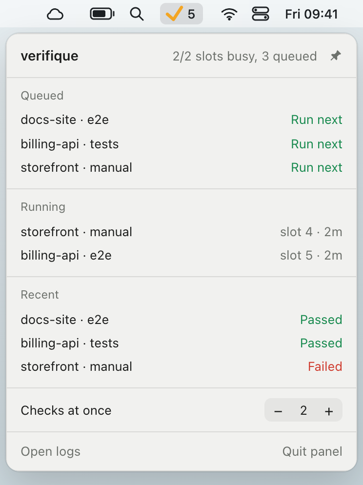
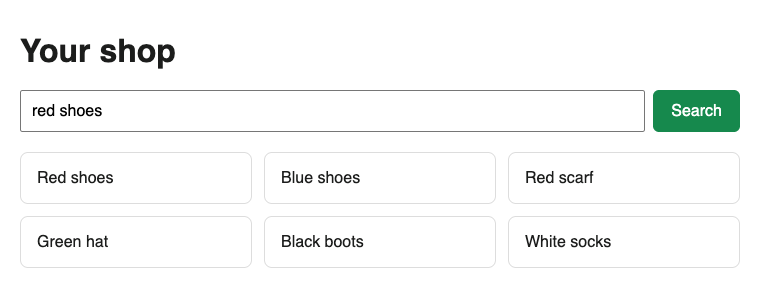
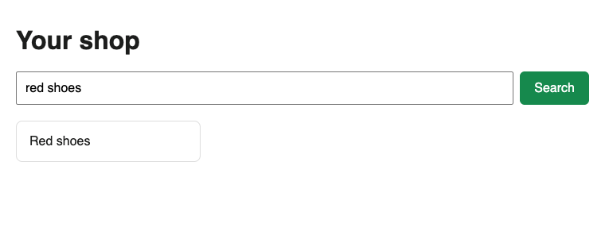

Where agents are today
Your agents already try the app. They grade their own work.
Coding agents have started checking their changes in a real browser. Claude Code Desktop does it by default after it edits, and Copilot’s coding agent attaches screenshots to its pull requests. That’s a big step up from unit tests, which only cover the cases the agent thought of.
But the agent trying the change is the one that wrote it, working from its own idea of what you asked for. A second agent that starts fresh, with your request in your words, doesn’t inherit those assumptions. Doing that for many agents at once is where it gets hard.
Doing it yourself
Checking in parallel needs isolation
With one agent, a check is simple: start the app on its usual port and try it. With several agents working at once, each check needs two things to itself. Its own copy of the code, usually a git worktree, so agents don’t change each other’s files. And its own running copy of the app, on its own ports and with its own databases, so one agent never tests another’s change or trips over its data.
Separate ports per worktree are easy to get now: tools such as Conductor hand them out. A fresh set of databases for every check, cleaned up afterwards, is the part people rarely build. And even with all of it, there’s one more problem.
The catch
Then your laptop runs out
Start fifteen agents together and they tend to finish close together. If each checks its own work, that means fifteen builds, fifteen copies of your app with their databases, and fifteen browsers, all at once. Memory runs out, everything slows down, and checks fail because the machine is overloaded, not because the code is wrong. Phone apps are worse, because simulators and emulators are heavy and a laptop can only run a few.
The idea
verifique: a verification queue
verifique handles both. Every check gets its own slot, with a git worktree no other running check uses, its own ports and freshly created databases, so the isolation is built in. And the checks wait in one queue for the whole laptop, shared by every repository: agents hand over their work and carry on with their next task, and only as many checks run at once as you allow, two by default.
Checks no longer swamp your laptop: they wait their turn, and if your laptop has room, you can let more run at once.
How it works
From finished work to a verdict, in five steps
Here’s what happens to one piece of work.
-
An agent submits its work
From its branch or worktree, it runs
verifique submitwith your original request and a note saying where to find the change in the app. Uncommitted changes are included. -
The work waits in the queue
The agent carries on with something else, and waiting spends no tokens.
-
A slot becomes free
verifique copies the work into the slot, builds it, creates fresh databases and starts your app.
-
The check runs
A command reports through its exit code. An agent check opens your app in a real browser and tries the change.
-
A verdict comes back
If it failed, the agent that wrote the code gets the reason, fixes it and submits again. If it keeps failing, verifique stops and lets you know.

$ verifique submit --check manual --request-file request.md \
--brief "Open the shop, type red shoes into the search box and press Search."
62
$ verifique wait 62
failed: The search bar renders, but pressing Search never filters the product list…verifique knows how to start your app and which checks to run from one short file in your repository, verifique.yaml. Your coding agent writes it for you, as Get started shows.
What you get back
Every check ends in a verdict with proof
The verdict is what you and your agents read. These two are real, and they come from a copy of verifique’s sample shop. The request was “Add a search bar to the shop that filters the products when you press Search.” The first attempt had a planted bug, and the checker was told how to reach the change, not that anything was wrong.
Failed First attempt

The search bar renders, but pressing Search never filters the product list — all six products stay on screen. The filtering code is bound to the form’s “reset” event (index.html), which nothing in the UI fires, while the “submit” handler just returns false and swallows the Search press.
Passed After the fix

The shop has a working search bar: typing a query and pressing Search filters the product list in place, and clearing the box restores all six products. The request is met.
Both verdicts are shortened, and the screenshots are the ones the checker saved.
What a pass takes
A command, such as your test suite, passes when it exits 0, as it would anywhere. An agent check has to do more:
- A fresh agent. The checker starts with no memory of writing the code.
- Your request. Agents are told to pass it on word for word, so the checker works from what you asked for, not a summary of what was done.
- Proof. A pass must list its steps and what it saw, with at least one evidence file, such as a screenshot or page snapshot.
- The exact content. A pass is tied to a hash of the files. Commit the same files later and it still counts. Change a line and it doesn’t.
Questions
What you might still be wondering
Isn’t this just CI?
CI runs after you push, on another machine, and runs the checks you’ve already scripted. verifique runs before anything is pushed, on your laptop, on work that may not be committed yet, and an agent check tests things nobody scripted. Keep your CI. This catches problems before they get there.
My agent already checks its own work. Why add another?
Keep it: an agent catching its own mistakes early is good. verifique adds a second look from an agent that starts fresh, with your request in your words rather than the author’s idea of it, and keeps fifteen of those checks from running on one laptop at once.
Why not run each agent in the cloud?
Cloud agents run each task on its own machine, so they don’t collide either. verifique is for work that stays on your laptop: uncommitted changes, your own seed data and setup, iOS simulators, which need a Mac, and no bill per machine-minute.
Why not Docker?
Run your database servers however you like. verifique runs the app itself natively, because builds reuse their caches between checks, Docker on macOS and Windows runs inside a virtual machine that costs memory, and iOS simulators can’t run in a container.
Can the checker get it wrong?
Yes. It’s an AI model, the same kind as the agent that wrote the code, so it can miss something or fail good work, and a pass can’t vouch for what no screen shows, such as security, performance or data integrity. That’s why a pass lists what it tried and what it saw. Run your own tests as checks alongside it, and keep reviewing the code. verifique takes away the testing by hand, not your judgement.
Is it worth it with only two or three agents?
If you’re tired of testing their work by hand, yes: even one agent gets a second one checking it. The queue matters more as you add agents.
What does it cost?
verifique is free and open source under Apache-2.0. Waiting costs nothing, and so does a check that’s only a command. An agent check is an ordinary session of your coding agent, on your own plan: the sample shop’s two checks cost about 50 cents together, and a real app costs more. Connecting a project is a one-off: it cost $5 to $11 of agent time on three projects.
Does my code leave my laptop?
verifique has no account and no server of ours. Once a day it asks GitHub for its latest version, to tell you when there’s an update, and verifique updates off stops that. An agent check sends your request, the diff and what it sees in your app to your agent’s model provider, as your coding agent already does. Your app, its build and the browser tool reach the network as they do when you run them yourself.
Is it safe to let checks run unattended?
Treat a check like starting your app yourself. The checking agent gets the browser and its own job folder, plus whatever your own agent settings already allow, with no permission bypass. Checks use your project’s .env, so keep test keys in it, and point cloud credentials such as ~/.aws at nothing. verifique only creates and drops databases named verifique_*.
Is it for teams?
verifique is a tool for one developer’s laptop. Each developer runs their own queue, and verdicts and their proof stay on that laptop: there’s no shared dashboard, and nothing appears on your pull requests. verifique.yaml lives in the repository, so once one person has connected a project, the whole team has it.
What does it work with?
Any framework whose app starts from a terminal command and keeps its data in Postgres, MongoDB or Redis. Any agent that can run a terminal command can submit work, and Claude Code is the checker it has been tested with. It has been tried on web and iOS apps, and Android is experimental.
Get started
Connect your project in four steps
- Install it. Run the commands for your system. They install verifique, start the queue in the background and add support for your databases. The last line adds the status-bar panel, so leave it out if you don’t want it.
- Connect your project. Run
verifique initand give the output to your coding agent. It reads your code and writesverifique.yaml: how to start your app, what two copies of it would fight over, and which checks to run. - Prove it.
verifique doctorstarts two copies side by side and checks that each one used its own databases. - Tell your agents. Add the lines from
verifique init --rulesto your project’s agent instructions, so they know how to submit their work.
macOS, in Terminal
brew install smnkgv/verifique/verifique
verifique service install
verifique plugin add postgres redis
verifique panel installWithout Homebrew: curl -fsSL https://raw.githubusercontent.com/smnkgv/verifique/main/install.sh | sh. The panel also comes as a download for Apple Silicon or Intel.
Linux, in a terminal
curl -fsSL https://smnkgv.github.io/verifique-packages/verifique.gpg | sudo tee /usr/share/keyrings/verifique.gpg > /dev/null
echo "deb [signed-by=/usr/share/keyrings/verifique.gpg] https://smnkgv.github.io/verifique-packages/deb stable main" | sudo tee /etc/apt/sources.list.d/verifique.list
sudo apt update && sudo apt install verifique
verifique service install
verifique plugin add postgres redis
verifique panel installThat’s Debian and Ubuntu. Fedora, RHEL and Arch have their own repositories, and an install script covers anything else: the README has their commands. The panel needs WebKitGTK and an AppIndicator library, on Debian and Ubuntu sudo apt install libwebkit2gtk-4.1-0 libayatana-appindicator3-1.
Windows, in PowerShell
irm https://raw.githubusercontent.com/smnkgv/verifique/main/install.ps1 | iex
verifique service install
verifique plugin add postgres redis
verifique panel installverifique also needs Git for Windows (winget install Git.Git). With Scoop instead: scoop bucket add verifique https://github.com/smnkgv/scoop-verifique, then scoop install verifique.
See a sample verifique.yaml
# Database servers you already run
services:
postgres: {}
redis: {}
# How to start your app
stacks:
web:
prepare: [pnpm install, pnpm build]
seed: pnpm db:migrate && pnpm db:seed
env:
DATABASE_URL: "{postgres.url}"
REDIS_URL: "{redis.url}"
apps:
web:
run: pnpm start
port: 3500
ready: /
env: { PORT: "{port}" }
# What to run on each change
checks:
e2e: { stack: web, run: pnpm test:e2e }
# An agent uses the app by hand
manual: { stack: web, type: agent, agent: claude }You’ll need your database servers already running (Postgres, MongoDB or Redis), and Claude Code and Node for agent checks. Checks use your project’s .env, so keep test keys in it. Not ready to connect a project? Try the sample shop, which takes a few minutes.
New and small
I run fifteen to twenty-five coding agents at a time on one laptop. Checking their work had become most of my day. Tools such as Conductor cover parts of it, but I couldn’t find one that does all of it on a laptop, with a different agent signing off, so I built this. If you know one, tell me.
It’s new and it will have rough edges. Its tests pass on macOS, Linux and Windows, and the real apps it has been tried on so far ran on Macs, with Claude Code as the checker. If you try it, tell me where it breaks.
Hlib Semeniuk · Open an issue
Go deeper
Every command and setting is in the README, and the reasoning behind each decision is in the design document.
Read the README →